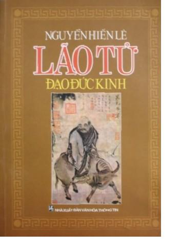

MỤC LỤC
Vài lời thưa trước
Phần I: ĐỜI SỐNG và TÁC PHẨM
Chương I: Đời sống
1. Sự tích Lão tử
2. Quê quán
3. Tên họ
4. Chức tước
5. Lão tử với Khổng tử có gặp nhau không? Khổng tử có hỏi Lão tử về lễ không?
6. Lão tử có phải là Lão Lai tử không?
7. Lão tử có phải là thái sử Đam 儋 không?
8. Tuổi thọ
Chương II: Tác phẩm
A. Xuất hiện thời nào?
B. Do ai viết?
C. Bản Lão tử lưu hành ngày nay
D. Các bản chú thích
Phần II: HỌC THUYẾT
Chương I: Đạo và Đức
Lão tử là người đầu tiên luận về vũ trụ
A. Đạo: Bản nguyên của vủ trụ
B. Đức: Sự trưởng thành của vạn vật
Một học thuyết vô thần
Chương II: Tính cách và qui luật của đạo
A) Phác
B) Tự nhiên
C) Luật phản phục
D) Vô – Triết lí vô
Chương III: Đạo ở đời
Xã hội theo Khổng
Lật ngược nền luân lí của Khổng.
Lật ngược chế độ tôn ti của Khổng
Xử kỉ
Tiếp vật
Dưỡng sinh – Người đắc đạo
Chương IV: Đạo trị nước
Hữu vi thì hỏng – Trị nước phải như nấu cá nhỏ
Chính sách vô vi
Ngăn ngừa trước bằng “phác”
Tư cách ông vua
Phần III: DỊCH ĐẠO ĐỨC KINH
Thiên thượng
Chương: 1 2 3 4 5 6 7 8 9 10 11 12 13 14 15 16 17 18 19 20 21 22 23 24 25 26 27 28 29 30 31 32 33 34 35 36 37
Thiên hạ
Chương: 38 39 40 41 42 43 44 45 46 47 48 49 50 51 52 53 54 55 56 57 58 59 60 61 62 63 64 65 66 67 68 69 70 71 72 73 74 75 76 77 78 79 80 81
Về cuốn Lão tử - Đạo Đức kinh (LT-ĐĐK), trong bộ Hồi kí (Nxb Văn học – 1993), cụ Nguyễn Hiến Lê cho biết:
“Chúng ta đã có vài ba bản dịch Đạo đức kinh rồi.
Tôi góp thêm một bản dịch nữa, với một phần giới thiệu khoảng 100 trang về học thuyết của Lão tử.
Theo các học giả Trung Hoa gần đây, cho rằng Lão sinh sau Khổng, Mặc, trước Mạnh; và bộ Đạo đức kinh xuất hiện sau Luận ngữ, vào thế kỉ thứ IV hay thứ III, trước Tây lịch, do môn sinh của Lão tử chép lại lời thầy; tuy có khoảng mười chương của người đời sau thêm vào nhưng tư tưởng vẫn là nhất trí.
Lão tử là triết gia đầu tiên của Trung Quốc luận về vũ trụ, có một quan niệm tiến bộ, vô thần về bản nguyên của vũ trụ mà ông gọi là Đạo. Ông lại xét tính cách và qui luật của Đạo, dùng những qui luật đó làm cơ sở cho đạo ở đời và đạo trị nước, tức cho một nhân sinh quan và một chính trị quan mới mẻ. Do đó mà học thuyết của ông hoàn chỉnh nhất, có hệ thống nhất thời Tiên Tần.
Ông tặng cho hậu thế những tư tưởng bình đẳng, tự do, trọng hoà bình, không tranh giành nhau mà khoan dung với nhau (dĩ đức báo oán), trở về tự nhiên, sống thanh tịnh. Trở về tự nhiên theo ông không phải là trở về thời ăn lông ở lỗ, sống bằng săn bắn và hái trái cây, mà trở về buổi đầu thời đại nông nghiệp, thời bộ lạc, có tù trưởng nhưng tù trưởng cũng sống như mọi người khác, không can thiệp vào đời sống của dân. Nước thì nhỏ mà dân ít; các nước láng giềng trông thấy nhau, nghe được tiếng cho sủa, tiếng gà gáy của nhau mà dân các nước không qua lại với nhau, có thuyền có xe mà không ngồi, dùng lối thắc dây thời thượng cổ mà không có chữ viết (chương 80). Thời đó có thể là thời Nghiêu Thuấn mà tất cả các triết gia thời Tiên Tần đều cho là hoàng kim thời đại. Dĩ nhiên nhân loại không lùi lại như vậy được và đọc Lão tử chúng ta chỉ nên nhớ rằng ông muốn cứu cái tệ đương thời là đời sống đã phúc tạp quá, từ kinh tế tới lễ nghi, chính trị, tổ chức xã hội; con người đã gian tham, xảo trá nhiều, do đó mà loạn lạc, nghèo khổ.
Học thuyết của ông bổ túc cho học thuyết của Khổng, nén bớt tinh thần hăng hái hữu vi, quá thực tiễn của Khổng. Hiện nay người phương Tây chán nản nền văn minh cơ giới, sản xuất để tiêu thụ rồi tiêu thụ để sản xuất, muốn trở lại đời sống thiên nhiên, giản dị, nên Đạo đức kinh lại được nhiều người đọc. Nhưng các chính trị gia không ai theo bài học của ông cả; tôi nghĩ những câu như: “Càng ban nhiều lệnh cấm thì dân càng nghèo” (Chương 57), “Can thiệp vào việc dân nhiều quá thì dân sẽ trá nguỵ, chống đối” (Chương 60) rất đáng cho họ suy ngẫm”.
Trong Lão tử và Đạo Đức kinh nhìn từ văn minh Lạc Việt đăng trên Diễn đàn Lí học Đông phương, tác giả Nguyễn Vũ Tuấn Anh cho rằng cuốn LT-ĐĐK của Nguyễn Hiến Lê (NxbVăn Hóa Thông Tin – 1994) “là cuốn sách tập hợp khá nhiều tư liệu, phân tích sâu sắc và được biên dịch một cách khách quan…”[1]. Một người khác cũng đánh giá cao bản dịch của cụ Nguyễn Hiến Lê. Trong Đạo Đức kinh dễ hiểu, Phan Ngọc bảo: “Trong việc dịch này tôi cảm ơn các bản dịch tiếng Việt của Nguyễn Hiến Lê, Thu Giang, Giáp Văn Cường mà tôi đều tham khảo với tinh thần “Hư tâm cầu học”. Đó đều là những bản dịch tốt, biểu hiện một trình độ Hán học sâu và một công phu khảo cứu hết sức nghiêm túc. So với nhiều bản dịch tiếng Pháp, tiếng Anh, tiếng Đức, tiếng Nga thì nó dễ hiểu hơn” [2].
LT-ĐĐK gồm có 3 phần:
Phần I: Đời sống và tác phẩm
Phần II: Học thuyết
---Chương 1: Đạo và đức
---Chương 2: Tính cách và qui luật của đạo
---Chương 3: Đạo ở đời
---Chương 4: Đạo trị nước
Phần III: Dịch đạo đức kinh
---Thiên thượng: từ chương 1 đến chương 37
---Thiên hạ: từ chương 38 đến chương 81
Trong phần III, mỗi chương gồm các phần nhỏ mà tôi tạm gọi là (vì trong sách không ghi):
- Nguyên văn chữ Hán
- Phiên âm
- Dịch nghĩa
- Lời giảng (từ này của cụ Nguyễn Hiến Lê, xem tiết Tư cách ông vua, chương IV, phần II)
Khi chép lại, tôi ghi thêm dấu hoa thị (°) để phân cách các phần nhỏ đó ra cho tiện phân biệt, nhưng có chương tôi không thể tách phần Dịch nghĩa và phần Lời giảng ra được, có chương không có phần Lời giảng.
Trước đây tôi đã chép lại 46 chương của phần III đăng trên Website Hoa Sơn Trang. Nay tôi đã mua được cuốn LT-ĐĐK, nên tôi chép trọn phần III: Dịch Đạo Đức kinh trước, sau đó mới chép phần I và phần II. Ngoài lí do sẵn có 46 chương trong phần dịch, còn một lí do nữa là sau khi chép xong phần dịch rồi, đến khi chép hai phần kia, gặp những câu trích dẫn từ phần dịch, ta chỉ cần copy rồi dán vào là xong, rất tiện lợi. Một lí do nữa, đó là vì tôi nghĩ rằng nếu chúng ta đọc phần dịch trước rồi sau đó mới đọc các phần kia thì sẽ dễ hiểu hơn.
Bản Hoa Sơn Trang tuy chỉ mới có 46 chương, và phần Lời giảng (Hoa Sơn gọi là Lời bàn) trong nhiều chương bị lược bỏ vài chữ, vài câu hoặc vài đoạn; phần Nguyên văn và phần Dịch nghĩa cũng không giống hẳn trong sách (mà ngay trong sách, hai phần này, nhiều chỗ cũng không khớp nhau), nhưng nhờ có bản Hoa Sơn Trang mà việc chép lại 46 chương đầu nhanh chóng và dễ dàng hơn so với 35 chương còn lại rất nhiều.
Xin chân thành cảm ơn Hoa Sơn Trang và xin trân trọng giới thiệu cùng các bạn.
Goldfish
Tháng 01 năm 2010
Chú thích:
[1] Trên trang http://www.lyhocdongphuong.org.vn/diendan/index.php?showtopic=1510, tác giả có chép lại phiên âm và dịch nghĩa Chương Một. (Goldfish).
[2] Trích Lời giới thiệu tác phẩm Đạo Đức kinh dễ hiểu, Nhà xuất bản Văn học, Hà Nội, 2001 (xem ebook cùng tên đăng tại http://www.thuvien-ebook.com/forums/showthread.php?t=2364, post #4). Chúng ta đều biết bản dịch của cụ Nguyễn Duy Cần có trước bản dịch của cụ Nguyễn Hiến Lê, nhưng không biết Phan Ngọc vô tình hay cố ý lại nêu tên cụ Nguyễn Hiến Lê trước? (Goldfish).